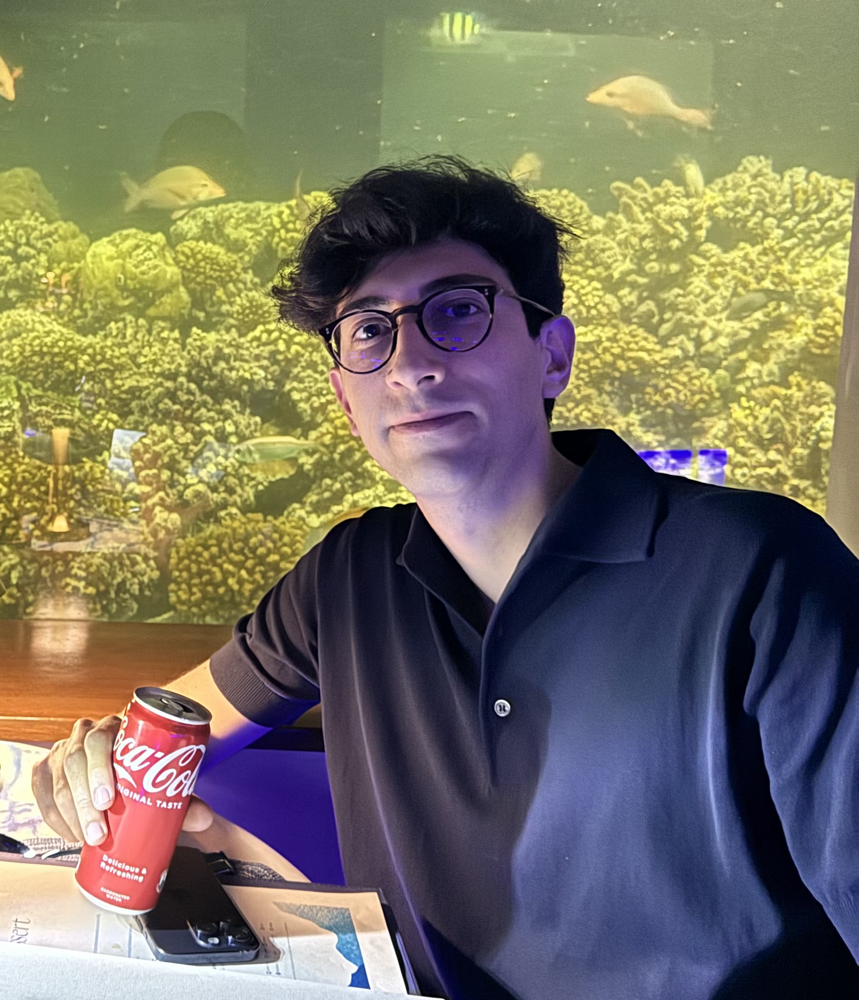

I am a PhD student in the Computer Science Department at ETH Zürich, advised by Fanny Yang, and part of the Institute for Machine Learning. I was previously an Applied Scientist Intern at Amazon Science in Seattle, where I worked on machine learning and experimentation to select the best offers for customers. Before that, I was a visiting graduate student at Harvard University, hosted by Issa Dahabreh in the CAUSALab. I have also been fortunate to be supported by the Ermenegildo Zegna Founder's Scholarship.
My research focuses on trustworthy decision-making from heterogeneous data sources. In many scientific problems, evidence comes from heterogeneous sources such as randomized experiments, observational studies, and flexible machine learning models (aka foundation models). These sources often have complementary strengths and weaknesses, and I develop statistical methods to combine them in ways that make the causal conclusions drawn from data more robust and efficient.
